Spint One:
Aim:
To make a basic programme to print out the contents of the fruit bowl and has a function
Final Output: (screenshot)
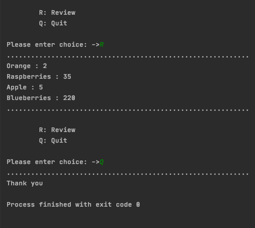Reflection:
I thought that this first sprint was sucessful and was done in a timely manner. The review function worked well. However the major problem with this sprint is that the user couldn't make their own fruit bowl list, or add/delete the fruit from it. This is a big problem which i'll focus on in other prints.
Sprint Two:
Aim:
To be able to add a new fruit and the quantity of it at the beginning of the programme.
Final Output: (screenshot)
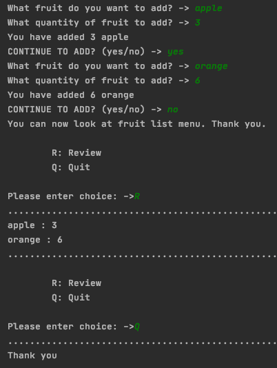Planning:
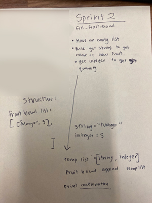Kanban:
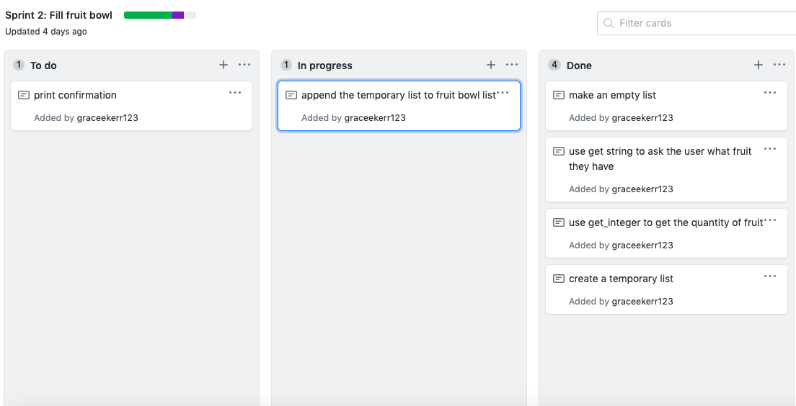Iterative Decision:
Option 1:
Since I wanted to make sure that users could add more fruit when they fill the bowl at the beginning. The first option is to: put the code to ask if the user want to fill the bowl with more fruit in the 'menu' function. I thought this was a good idea because then because I could put before the menu, which makes it easier to see what the layout of the main function is. However, I do think that this is a bad option because it will make the menu function (main function) too long, while it could be more efficient.

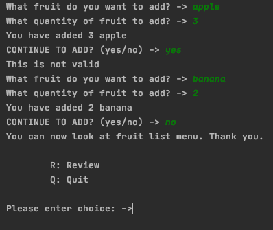
Option 2:
In option 2, i put the code about asking the user to fill the bowl wih more fruit in the 'fill_a_fruit_bowl' function. I thought that this was a better option that option 1 because it made sure that the code was more efficient and easier to add to in the future. This is because it doesn't make the menu function all confusing - which would make it harder to test to spot errors.
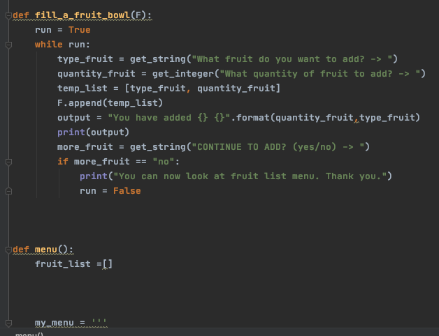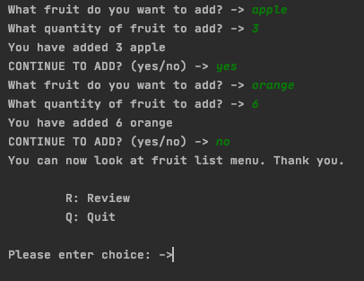
Problems:
Problem 1:
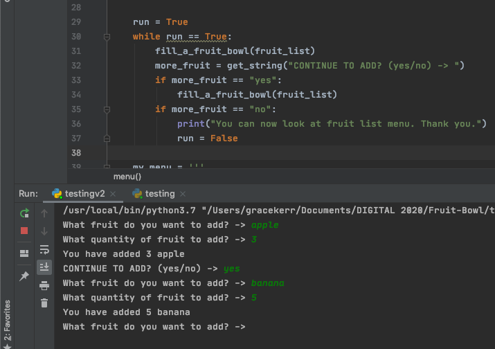(NOTE: This is for option 1) The problem with this code is that I stated that the program should repeat the 'filla fruit bowl' function if the user enters 'yes'. However since this is in a loop, it would cause the 'fill_a_fruit_bowl' function twice, once when they answer is yes and a second time when the the loop starts again. To fix this i took out the option of 'yes', so only the option of 'no' - therefore the 'filla fruit bowl' function one happens once per loop.
Reflection:
The changes I made from sprint one to sprint two is that I made my code more specific to the task. I changed 'my_list' to 'fruit_list' - this caused a few problems as I also had to change the arguments in the functions to make sure it linked to the new list instead of the old list.
Other problems I came across was that if the user wanted to add more fruit, to fill the fruit bowl,
Sprint Three:
Aim:
To update quanity of fruit currently in the fruit bowl
Final Output: (screenshot)

Planning:

Kanban:
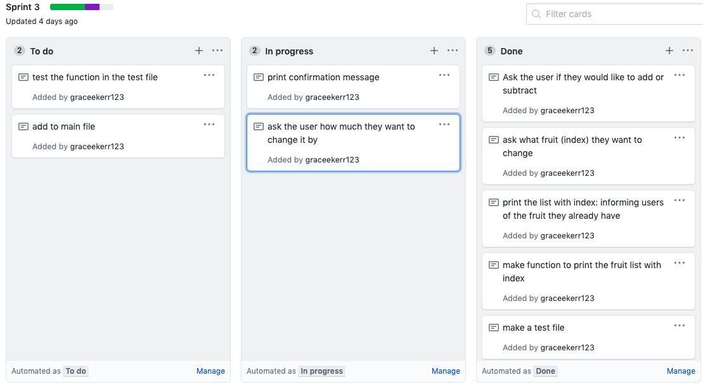Problems:
- Unexpected text
- Removing 5 apples when you only have 2
- Entering strings for integer
- Entering an empty string
- Entering the same fruit twice
- If you enter the singluar or plural of the fruit
- If you enter a space before or after the fruit
Problem 1:
Before:
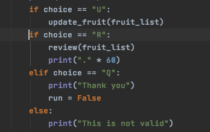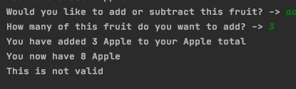
After:
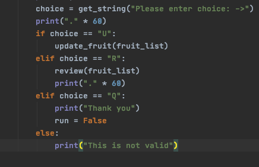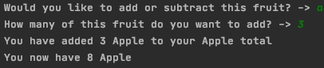
Using 'elif' instead of 'if' guarentees that only one condidtion gets excuceted. So before my problem was that the progamme tested it more than necessary. So now it tested the if's separately to the rest of the conditions, that's why it was able tow work properly
Problem 2: (Validations)
Before:
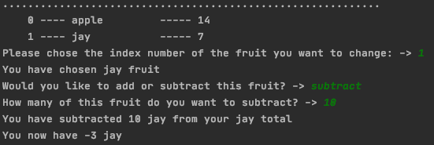After:
This problem is that you can delete more fruit than possible. This is a problem because you can't have negative fruit.
Problem 3: (Validations)
Before:
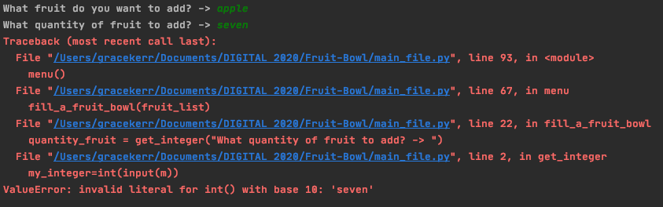After:
This problem is that the code won't accept a number in words like 'seven' when in real life it's considered the same as 7, the integer.
Problem 4: (Validations)
Before:
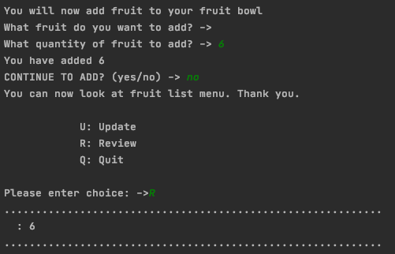After:
This problem is that when you enter a empty string, it will accept this as a item/fruit to add to the list when it's just a mistake.
Problem 5: (Validations)
Before:
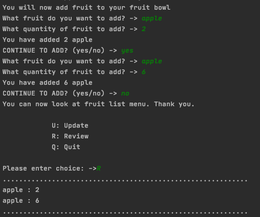After:
This problem is the programe won't recogonise if the user adds a repeated fruit, so they add apples twice. This is very bad because then they'll have the wrong number of apples wrong in the system.
So I need to improve the way new fruit is added to the bowl. The problem at the moment is the same fruit can be added repetedly without the program recognising that is the same fruit. This could be fixed by updating the quantity of the fruit which I did in sprint 3, but I could still enter two sets of the same fruit while filling up my fruit bowl at the beginning.
Problem 6: (Validations)
Before:
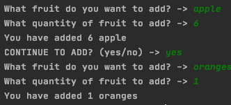After:
This problem is the programe won't recogonise if the fruit is a plural or singlular. This is bad because the grammar and correct english of this is extremely bad for the user to read.
Iterative Decision:
Reflection:
Some changes I made from sprint 2 to 3 was that I allowed the user of this update the fruit list for their own fruit and their own quantities. While doing this, I needed to add update the fruit as part of the menu that the user can chose from - so I did this. Interestingly I also had to make another function 'print_with_index' to make sure I could print the fruit list with indexes when I have to ask the progam user what fruit they want to update - which can only be done when relating it back to the fruit.
Sprint Four:
Aim:
Final Output: (screenshot)

Planning:

Kanban:

Problems:
Iterative Decision:
Reflection:
THIS IS NOT IN THE PLANNING WEBSITE: but it is needed to be updated every sprint
Backlog:
Improve the way new fruit is added to the bowl. The problem at the moment is the same fruit can be added repetedly without the program recognising that is the same fruit. This could be fixed by updating the quantity of the fruit.
Unordered list
Unordered lists are used to markup lists where list items do not require numbering.
- Ut wisi enim ad minim veniam
- Quis nostrud exerci tation
- Lamcorper suscipit lobortis nis
- Ut aliquip ex ea commodo consequat
- Duis autem vel eum iriure dolor
Ordered list
Ordered lists are used to markup lists where list items require numbering.
- Hendrerit in vulputate velit esse
- Olestie consequat
- Vel illum dolore eu feugiat
- Nulla facilisis at vero eros
- Accumsan et iusto odio
Unstyled list
You can make the list unstyled using the list-unstyled class.
- Ut wisi enim ad minim veniam
- Quis nostrud exerci tation
- Lamcorper suscipit lobortis nis
- Ut aliquip ex ea commodo consequat
- Duis autem vel eum iriure dolor
Inline list
You can make the list display inline using the list-inline class.
- One
- Two
- Three
- Four
Buttons
You can apply the btn class to any element that requires a button style.